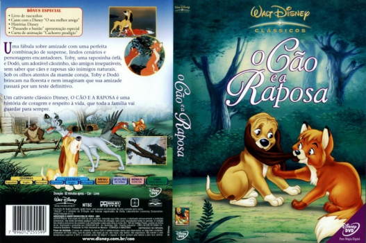
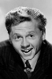
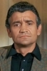

Outro Título:The Fox and the Hound
País:United States, 82 minutos
Idiomas falados:Espanhol, Inglês, Português
Gênero(s):Aventura, Animação, Drama, Família
Diretor(s):Richard Rich, Art Stevens, Ted Berman
Escritor(es):Daniel P. Mannix
Codec:MPEG-2 (DVD)
Número: 5837
Certificado:L
Sinopse:
Uma raposa e um cão crescem juntos como amigos, mas descobrem aos poucos que são inimigos na ordem natural das coisas. Quando adultos, põe a amizade em jogo.
Elenco:  
Tipo de mídia: DVD5,
Legendas: Espanhol, Inglês, Português, Sem Legendas
Alugado: Não
Tela: Anamorphic Widescreen